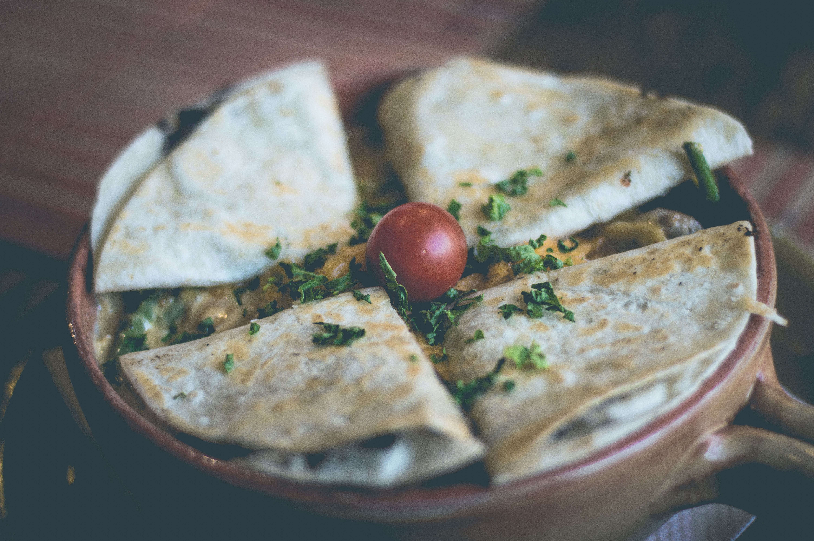

Quesadillas

A traditional mexican dish, delicious quesadillas
Ingredients
- 2 medium size tortillas
- 100 gr of Mozarella cheese
- extra ingrediente that you preffer
- some suggestions are: pulled pork
- Chicken, or bacon.
Process
- Heat the tortillas in an iron pan
- Turn it when you see a small burning
- Put the cheese half the way, later we will fold it in half.
- Add any extra ingredient that you want.
- Fold it in half, if you want, you can heat it a little more.
- Serve on a plate and sprinkle some cilantro